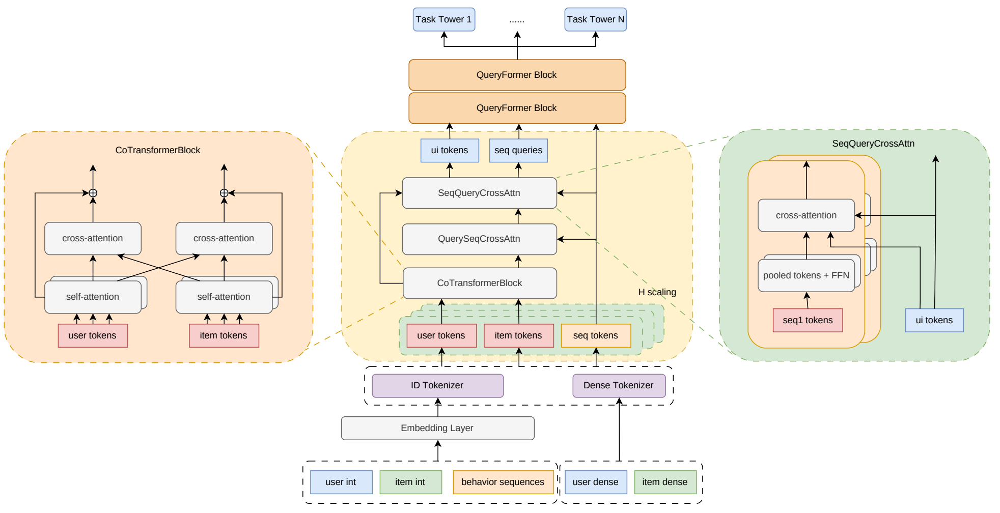
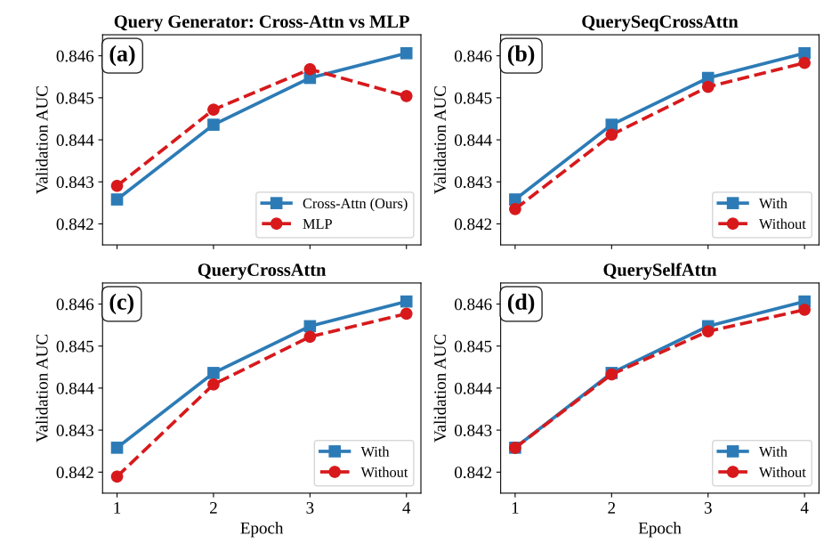
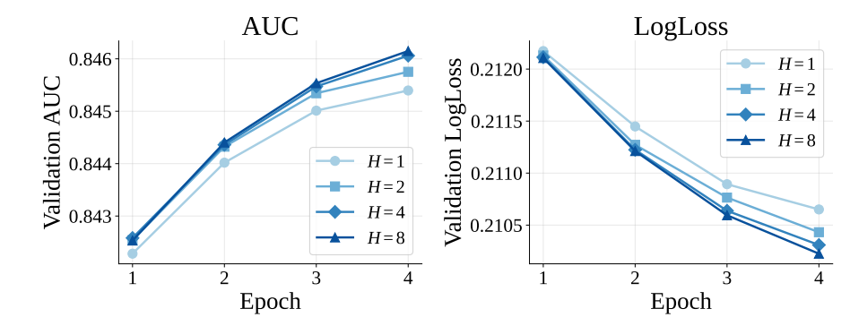

长序列推荐常把改进重点放在历史一侧：保留更多行为、增强序列编码器、堆叠更多层。QueryFormer 提出了另一个问题：历史里即使有足够的信息，负责读取它的 Query 是否已经知道该找什么？
这篇 TAAC 2026 / KDD Cup Tencent UniRec Challenge 工业赛道冠军方案，正式测试 AUC 为 0.83254。它的核心不是新增一种复杂的序列编码器，而是让查询生成经历三个步骤：用户与候选先交互，候选先取一份相关历史，再由行为域背景选择上下文，形成最终查询。下面重点分析这条路径为什么有用、实验支持到哪一步，以及额外预算应该花在哪里。原论文 §4–5

原论文图 1。左侧先更新用户／物品字段，右侧用行为初始化的探针读取扩充上下文；生成的 Query 再进入中间的轻量处理块。前面的查询生成桥接模块，与后面重复的 K 个块不是同一层级。
一、已有方案不缺上下文，缺的是怎样使用它
理解 QueryFormer，先要避免把它的对手描述得过于简单。HyFormer 已经将非序列字段与池化历史拼接，经 FFN 生成多个 Query；随后查询读取长序列，与字段做 token mixing，再进入下一层。它既不是“只用候选向量做 Query”，也不是一次聚合后就结束。
因此，QueryFormer 要解决的不是“给查询加入上下文”这么宽泛的问题，而是：同一份上下文，能否用更合适的结构转化为读取条件？
拼接 MLP 当然可以学习非线性关系，但各字段先被放入固定布局，再整体映射为 Query。QueryFormer 保留字段的 token 形态，让行为初始化的探针显式选择上下文。这是一种不同的归纳偏置：把“哪些条件对这次读取重要”放进可学习的匹配过程，而不只依赖整体投影。
更关键的是，被选择的上下文也经过了重构。它不再只是原始用户、物品字段，还包含双方交互后的表示，以及当前候选检索出的历史摘要。输入条件的改善与查询生成方式的改善，是这篇方案的两个相互衔接的部分。
二、三步查询生成，各自补齐什么条件
1. Co-Transformer：检索前，先让候选表示与用户有关
假设用户既浏览运动用品，也浏览数码产品，当前候选是一双较贵的跑鞋。这个例子只是帮助理解信息流：商品的价格、类目和品牌描述的是商品本身；它们与用户消费能力、既有偏好结合后，才更接近“这件商品对这个用户意味着什么”。
Co-Transformer 用两层结构完成这一步。每层先分别整理用户字段内部、物品字段内部的关系，再做双方的交叉注意力，以门控融合结果。组内 self-attention 处理同侧字段如何共同表达语义，跨侧 cross-attention 则让表示带上另一侧的条件。
它的位置比“用了 attention”更值得关注：交互发生在历史检索之前。 后面发起检索的是更新后的物品表示，而不是尚未结合用户信息的候选字段。这样，字段交互不仅服务最终预测，还参与决定从历史中取什么。
对应的消融下降分别是 0.00020 和 0.00029。两者支持了字段整理与跨侧交互的有效性，后者影响更大。不过，实验没有区分这部分收益究竟经由检索路径还是最终字段表示产生，不宜把路径解释写成已证明的因果分解。（原文 §4.2.3、表 4）
2. QuerySeqCrossAttn：先找到线索，为什么还要再读历史？
用户总体兴趣与当前候选所需的证据不是一回事。继续上面的例子，面对跑鞋候选，模型需要运动用品相关的行为线索，而不只是数码与运动兴趣混在一起的全局摘要。
QuerySeqCrossAttn 用更新后的物品 token 聚合作为查询，分别读取四个行为域；每域得到一个候选相关摘要。这四个摘要被追加到非序列上下文中，与用户、物品等字段一起形成 26 个 token。
这看起来已经完成了兴趣聚合，为什么还要生成 Query，再读一次历史？因为两次读取的职责不同。第一次读取得到的是候选相关线索，用来改善下一步的读取条件；后续读取则利用更完整的条件，获取用于预测的序列表示。 前者不是后者的替代品，而是查询形成的输入。
这种设计把历史从“等待被读取的对象”变成“帮助决定如何读取的证据”。删除该模块，AUC 下降 0.00023，说明这份摘要在完整结构里有用。但原文没有比较“摘要只进入预测”与“摘要还参与查询生成”，因此还不能断言收益全部来自反馈路径。（原文 §4.2.4、表 4）
3. SeqQueryCrossAttn：由行为域决定，该关注哪些上下文
两个模块名称相近，方向却不同：上一模块是候选读取历史，这一模块是行为初始化的探针读取上下文。
每个行为域用 mean/max 池化摘要和初始化 FFN 构造两个探针，再让探针对扩充上下文做 cross-attention。用一个式子概括：
\[q_{s,k}=\operatorname{CrossAttn}_{s}\big(q^{(0)}_{s,k},\widetilde N,\widetilde N\big),\qquad k=1,2.\]
其中，初始探针提供行为域背景，扩充上下文提供用户、候选及初步检索证据。行为域不同、候选不同，匹配权重也可以不同。它不预设某个字段始终重要，而是让每次查询形成时重新选择条件。四域共生成八个 Query，随后进入序列读取与 token 混合。
这里有一个容易忽略的设计理由：探针不是直接从候选出发，而是从各域行为摘要出发。候选相关信息已经放进上下文；现在由不同的行为域去选择这些信息，相当于让“域背景”和“当前匹配条件”共同决定读取方向，而不要求所有历史共享同一个候选表示。这是对结构的解释，并不意味着论文已经证明两个探针具有明确的兴趣分工。
它也没有神奇地恢复池化丢失的信息。池化仍是初始化的压缩瓶颈，但最终预测并不只依赖这个摘要：新 Query 还会回到保留的序列 token 中读取证据。摘要负责形成读取条件，序列负责提供细粒度信息。 两者分工，才使“先压缩，再读取”不等于只用池化做预测。（原文 §4.2.5、图 1）
三、消融支持核心判断，但不是收益分账表
先看总体比较。在优化后的训练配方下，默认 QueryFormer 的验证 AUC 为 0.84606，HyFormer 为 0.84477；前者高 0.00129，稠密参数由 105.8M 降至 87.1M。这说明完整架构在报告的配置中更有效，但不能把全部差值归给 attention 查询生成。（原文表 3）
以下消融固定 H=4、d=272、K=2，训练四轮，报告最佳验证 AUC。数据采用 Round 2 的 90/10 Row-Group 划分，每域保留最近 256 个行为位置；这些数值不是正式测试集结果，也不是严格时间切分的验证结论。
| 改动 | 最佳 Val AUC | 相对完整模型下降 |
|---|---|---|
| 完整模型 | 0.84606 | — |
| attention 生成 Query 改为 MLP | 0.84568 | 0.00038 |
| 删除用户／物品交叉注意力 | 0.84577 | 0.00029 |
| 删除候选相关历史检索 | 0.84583 | 0.00023 |
| 删除组内自注意力 | 0.84586 | 0.00020 |
| 同时删除四种机制 | 0.84496 | 0.00110 |
数值整理自原论文表 4，均为 AUC 绝对差值。
这组结果回答了两个不同的问题。第一，查询生成并非无关紧要的入口层：替换为 MLP 造成最大单项下降，是核心改动最直接的证据。第二，前面的条件准备也有价值：在这组配置中，保留用户物品交互与候选检索都能改善效果。
但它没有证明模块可以独立“分账”。每个单项消融都从完整模型出发，衡量的是其他模块存在时的边际影响。即使四项下降之和恰好等于同时删除的下降，也不能据此认定收益彼此独立；缺少组合消融，仍不知道哪些模块互相增强、哪些功能部分重叠。

原论文图 4。最值得细看的是 (a)：MLP 查询生成在前三轮略占优，attention 版本在第四轮取得更高最佳值。其余子图分别检查历史检索、跨侧交互和组内自注意力。
曲线让结论比单个数字更具体：attention 的优势表现为该训练协议下更高的最终最佳效果，而不是从训练开始就更好。如果训练预算很短，仅凭“最大消融下降”就优先替换查询生成，未必得到同样结果。原文也没有给出充分的参数匹配细节或多种子区间，所以更稳妥的结论是：这种显式上下文选择值得验证，而不是 attention 普遍胜过 MLP。
四、多视角扩展：有效，不代表继续加 H 最划算
前面解决的是信息怎么流动，多视角解决的是用多少表示容量。QueryFormer 对同一输入建立 H 条独立 token 化路径，形成 (batch,H,T,d) 的表示；H 不是 attention head 数，也不是把同一份 embedding 复制 H 次。
独立路径让同一组异质字段与行为关系能够进入不同的表示空间。这个动机类似于避免所有关系挤在单一表示里，但“视角互补”仍是解释：论文没有展示各视角的语义分工，也没有用去相关实验隔离互补性与参数增大的作用。

原论文图 3。在 d=272 下增加 H，最终 AUC 与 LogLoss 都改善。曲线回答“扩展是否有效”，还不能单独回答“值不值得”。
把成本放回来，结论就清楚得多：
| H | Val AUC | 稠密参数 M | 批量均摊评估时间 μs/样本 |
|---|---|---|---|
| 1 | 0.84540 | 50 | 31.1 |
| 2 | 0.84575 | 62 | 34.5 |
| 4 | 0.84606 | 87 | 43.1 |
| 8 | 0.84615 | 137 | 58.7 |
整理自原论文表 6/7；固定 d=272、K=2。时间是批量评估的均摊值，不是线上请求延迟。
H=1→4 带来 +0.00066 AUC，均摊时间增加约 38.6%；H=4→8 只再增加 0.00009，时间却再增加约 36.2%。默认 H=4 的意义，是保留大部分已观察到的收益，而不是找到一个理论上的最优视角数。
更有意思的比较来自深度。H=4 时增加到 K=3，可得到 0.84616 AUC、97M 稠密参数；H=8 则是 0.84615、137M。从 H=1 起步，多视角很有价值；到了 H=4，继续加视角不一定是最省参数的下一步。 不过原文缺少 K=3 的耗时，不能进一步断言它的延迟更优。
训练更久也不是无成本的替代方案：四轮延长到十一轮，AUC 只增加 0.00010，LogLoss 反而变差。这提醒我们，容量、训练步数、排序效果和概率质量并不总是一起改善；只按最佳 AUC 选配置，会遗漏另一部分代价。（原文表 7）
还有一个资源口径要记住：默认模型约有 628M 稀疏参数与 87M 稠密参数。多视角扩展也增加 embedding 成本，不能把 87M 当成全模型大小，再据此称其为小模型。
五、冠军结果，不能只靠架构来解释
QueryFormer 的查询桥接并没有配套一个重型全序列 Transformer。后面的轻量块用 SwiGLU 更新序列，以少量 Query 读取历史，再用参数无关的 token 置换和 FFN 融合信息。它把一部分建模能力放在查询侧，而不是让所有历史位置进行昂贵的全连接交互；这是设计与预算的配合，不是说序列间关系已经不重要。
packed shared-parameter attention 将可共享计算的查询打包执行，减少重复 K/V 投影和 kernel 启动开销。H=8 的均摊评估时间约为 H=1 的 1.89 倍，说明报告的扩展成本没有按视角数线性增长。但缺少同配置的 packed/unpacked 对照，这个数字不能直接称为打包算子带来的加速倍率。（原文 §4.3、表 6）
最终成绩还叠加了训练策略。转化时间辅助监督被删除后，验证 AUC 下降 0.00016；作者另外报告全量训练约 +0.0001 AUC，多教师蒸馏到单学生约 +0.0007 Test AUC。后者尤其重要：冠军推理时保持单模型成本，却吸收了训练阶段多个模型的知识。结构消融与正式成绩之间，因此还隔着训练数据和蒸馏过程。（原文 §4.4–5.1）
这些增量不能跨验证／测试口径直接相加。MuonPlus、EMA、稠密特征融合、时间 embedding 等也未被完整独立消融，更适合视为共同配方，不能给每一项补写一个未经实验支持的收益。
六、读完后，最值得带走什么
QueryFormer 最可迁移的思想不是“把 MLP 全换成 attention”，而是：读取历史之前，先检查查询形成时是否已经拥有足够的匹配条件。 用户物品关系、候选相关线索、行为域背景分别补齐不同的信息，最终才组合成用于读取序列的 Query。
这也给预算分配提供了一个有根据的判断。如果现有模型已经用少量 Query 压缩长序列，优先检查查询入口可能比盲目增强序列编码器更有针对性；如果入口已足够强，再考虑独立表示视角。前者改变信息选择方式，后者扩大容量，不能混成一个“多加模块就有效”的结论。
证据边界同样明确：研究主要来自一个竞赛数据集，没有多种子置信区间，也未隔离反馈路径及视角互补性的具体贡献。报告的增益次序，不能保证在另一套数据上成立。
归根结底，好的序列模型既要保存有用的信息，也要形成合适的问题。QueryFormer 的价值，是把后一个问题做成了明确的信息流，并用消融说明：Query 的形成过程，本身就是值得投入建模预算的地方。
来源与延伸阅读
- 技术依据：QueryFormer v1（机制 §4，实验表 3/4/6/7）与 HyFormer v1（查询生成 §3.3）。本文未重跑训练；设计解释不等同于因果验证。原始线索来自腾讯广告技术公众号。
- 原图：Yuanzhe Zhou、Zhaoyang Zeng，QueryFormer v1 图 1、4、3，依据原文 CC BY 4.0 许可引用；仅裁切页面区域、缩放排版，未改变图内内容，中文图注由本文补充。
- 中文解读写法参考：几野的 UniScale 解读（知乎）、HSTU-ActionLoss 解读（知乎）、Wang-Luning 的 HyFormer 精读、Huiyu Chen 的 HSTU 解读、Changyungo 的 HSTU 解读、P19E99 的 HyFormer 精读。借鉴问题导向、前作比较与实验解释，不作为本文技术结论的依据；两篇知乎文章仅核对了检索可见片段，其余已阅读正文。